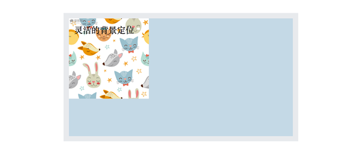
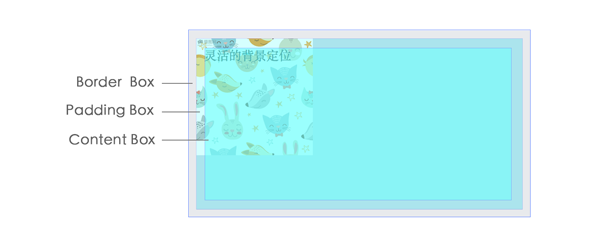
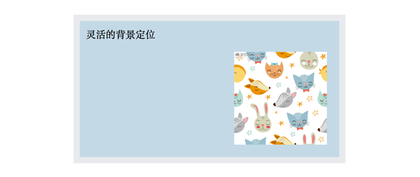
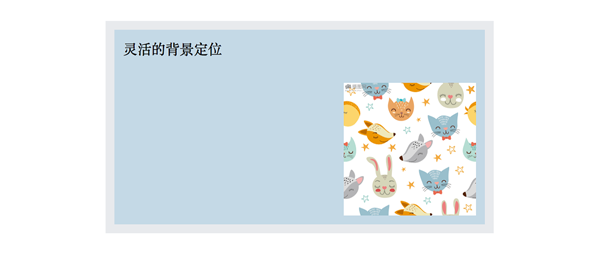

1.background-position 方案
它允许我们指定背景图像距离任意角的偏移量，只要我们在偏移量前面指定关键字。然而它在默认状态下背景图片紧贴左上角： 
为什么背景图片的位置是边框内呢？答案是：默认情况下，background-position 是以padding-box 为准的，这样边框才不会遮盖背景图片。当我们给它指定偏移量的时候，例如:
background:url(xxx.jpg ) no-repeat #C4D9E6;
background-position: right 20px bottom 20px;
背景图片将被指定到右下角，跟右边缘保持20px的偏移量，跟底边保持20px的偏移量。 *如果只规定了一个关键词，那么第二个值将是"center"。然而，在不支持background-position属性的浏览器中，背景图片会回到默认位置。会干扰到文字的可读性。于是，需要提供一个回退方案，把 bottom right定位值写到background属性里面。
background:url(xxx.jpg ) no-repeat bottom right #C4D9E6;
background-position: right 20px bottom 20px;
2.background-origin 方案
它规定 background-position 属性相对于什么位置来定位。语法：background-origin: padding-box|border-box|content-box;
padding:10px;
background:url(xxx.jpg ) no-repeat bottom right #C4D9E6;
background-origin: content-box;
默认情况下，背景图片通过 padding-box 定位，如果把它的值改成content-box，那么图片距离边角的偏移量就跟内边距一样了。
3.calc() 方案
语法：calc() = calc(四则运算)
用于动态计算长度值。
任何长度值都可以使用calc()函数进行计算；
calc()函数支持 "+", "-", "*", "/" 运算；
calc()函数使用标准的数学运算优先级规则；
在第一种方案中，我们想要把背景图片定位到距离底边20px, 且距离右边20px的位置。如果我们仍然以左上角偏移的思路来思考，起始就是希望它有一个 100%-20px 的水平偏移，以及100%-20px 的垂直偏移。所以我们可以把 calc() 函数在background-position 属性中使用：
background:url(xxx.jpg ) no-repeat #C4D9E6;
background-position: calc(100% - 20px) calc(100% - 20px) ;
*需要注意的是，运算符 "-" 前后都需要保留一个空格，例如：width: calc(100% - 10px)； 参考书籍：Lea Verou《CSS揭秘》